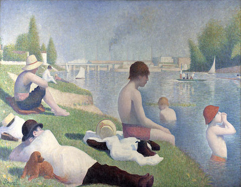
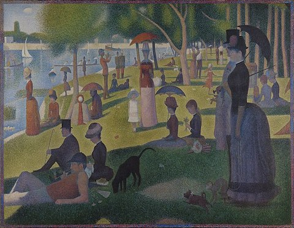
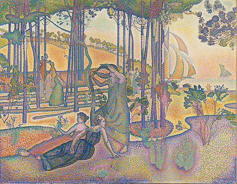
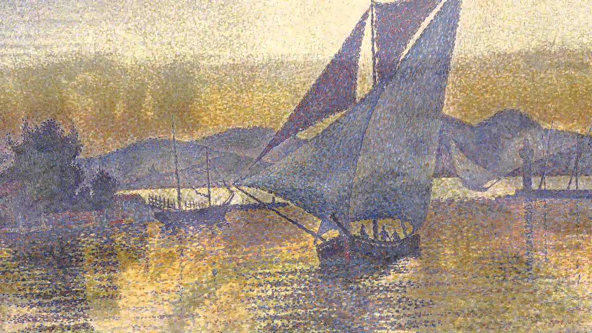

Apple Harvest by Camille Pissarro
On a sunny autumn day four labourers are engaged in bringing in the apple harvest – their
attention focused on a lone tree set on a hill. As the man uses a long grappling pole to shake the branches,
three women retrieve the fallen apples – all are enveloped in the welcome shade cast by the tree.

Bathers at Asnières by Georges Seurat
Men and boys on the bank of the Seine River in the working-class Parisian suburb of
Asnières.

A Sunday on La Grande Jatte by Georges Seurat
People from different social classes strolling and relaxing in a park just west of Paris
on La Grande Jatte, an island in the Seine River.

L'Air du soir by Henri-Edmond Cross
In April 1893, Henri-Edmond Cross, who had been living in the South of France for two
years, received a letter from his friend Paul Signac saying: "Since we both know and love this sunny land,
why don't we both raise a decorative monument to it?".

Femme à l'ombrelle by Paul Signac
The Woman with a Parasol is Berthe Roblès (1862-1942), a distant cousin of Camille
Pissarro, whom Paul Signac had met in the early 1880s when he was an habitué of the cabaret Le Chat Noir.

Portrait de Félix Fénéon by Paul Signac
On view
MoMA, Floor 5
Félix Fénéon was an editor, translator, art dealer, and anarchist activist and the critic who coined the
term Neo-Impressionism to describe the works of Signac and Georges Seurat in the late 1880s.

Portrait de Félix Fénéon by Paul Signac
Signac’s Le Port au Soleil Couchant, sold for $22.4 million at bidding at Christie’s